In this class project, authors Christian Castro and Max Pagan will take a look at data provided to us in order to provide insight about beers, breweries, and all the information about them that we can gather. Our goals for this project are to understand what is contained in the data,analyze basic statistics of the data and draw conclusions about demographics and trends, so that we can recommend future strategies to Budweiser to gain further edge in the competitive beer marketplace. We will do so by answering the nine questions below.
library(tidyverse)
library(ggplot2)
#bar charts with numbers: Breweries by state
breweries_per_state <- merged_data %>%
group_by(State) %>%
summarise(Brewery_Count = n_distinct(Brewery_id))
ggplot(breweries_per_state, aes(x = reorder(State, -Brewery_Count), y = Brewery_Count)) +
geom_bar(stat = "identity", fill = "steelblue") +
geom_text(aes(label = Brewery_Count), vjust = -0.5, size = 3, position = position_dodge(width = 0.9)) +
labs(title = "Number of Breweries by State",
x = "State",
y = "Number of Breweries") +
theme_minimal() +
theme(axis.text.x = element_text(hjust = 1, size = 5))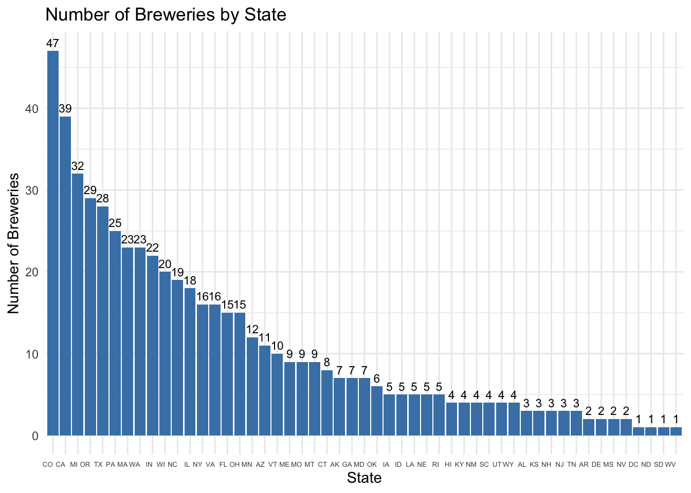
The state with the most breweries is Colorado - with 47. We can see that there is a sharp drop in number of breweries soon afterwards, with most states having fewer than ten breweries. DC, The Dakotas, and West Virginia all only have one brewery.
# Assuming 'beers' and 'breweries' are the names of your dataframes
merged_data <- merge(beers, breweries, by.x = "Brewery_id", by.y = "Brew_ID", all.x = TRUE)
#renaming some columns in merged_data for readability
merged_data <- merged_data %>%
rename(
Beer_name = Name.x,
Brewery_name = Name.y
)
# Print the first 6 observations
head(merged_data, n = 6)## Brewery_id Beer_name Beer_ID ABV IBU Style Ounces Brewery_name
## 1 1 Get Together 2692 0.045 50 American IPA 16 NorthGate Brewing
## 2 1 Maggie's Leap 2691 0.049 26 Milk / Sweet Stout 16 NorthGate Brewing
## 3 1 Wall's End 2690 0.048 19 English Brown Ale 16 NorthGate Brewing
## 4 1 Pumpion 2689 0.060 38 Pumpkin Ale 16 NorthGate Brewing
## 5 1 Stronghold 2688 0.060 25 American Porter 16 NorthGate Brewing
## 6 1 Parapet ESB 2687 0.056 47 Extra Special / Strong Bitter (ESB) 16 NorthGate Brewing
## City State
## 1 Minneapolis MN
## 2 Minneapolis MN
## 3 Minneapolis MN
## 4 Minneapolis MN
## 5 Minneapolis MN
## 6 Minneapolis MN# Print the last 6 observations
tail(merged_data, n = 6)## Brewery_id Beer_name Beer_ID ABV IBU Style Ounces
## 2405 556 Pilsner Ukiah 98 0.055 NA German Pilsener 12
## 2406 557 Heinnieweisse Weissebier 52 0.049 NA Hefeweizen 12
## 2407 557 Snapperhead IPA 51 0.068 NA American IPA 12
## 2408 557 Moo Thunder Stout 50 0.049 NA Milk / Sweet Stout 12
## 2409 557 Porkslap Pale Ale 49 0.043 NA American Pale Ale (APA) 12
## 2410 558 Urban Wilderness Pale Ale 30 0.049 NA English Pale Ale 12
## Brewery_name City State
## 2405 Ukiah Brewing Company Ukiah CA
## 2406 Butternuts Beer and Ale Garrattsville NY
## 2407 Butternuts Beer and Ale Garrattsville NY
## 2408 Butternuts Beer and Ale Garrattsville NY
## 2409 Butternuts Beer and Ale Garrattsville NY
## 2410 Sleeping Lady Brewing Company Anchorage AK# Create 'is_missing_ABV' column
merged_data$is_missing_ABV <- ifelse(is.na(merged_data$ABV), 1, 0)
# Create 'is_missing_IBU' column
merged_data$is_missing_IBU <- ifelse(is.na(merged_data$IBU), 1, 0)
# Install and load the naniar package
#install.packages("naniar")
library(naniar)
#to visualize missing data we'll create a missingness heatmap:
gg_miss_upset(merged_data)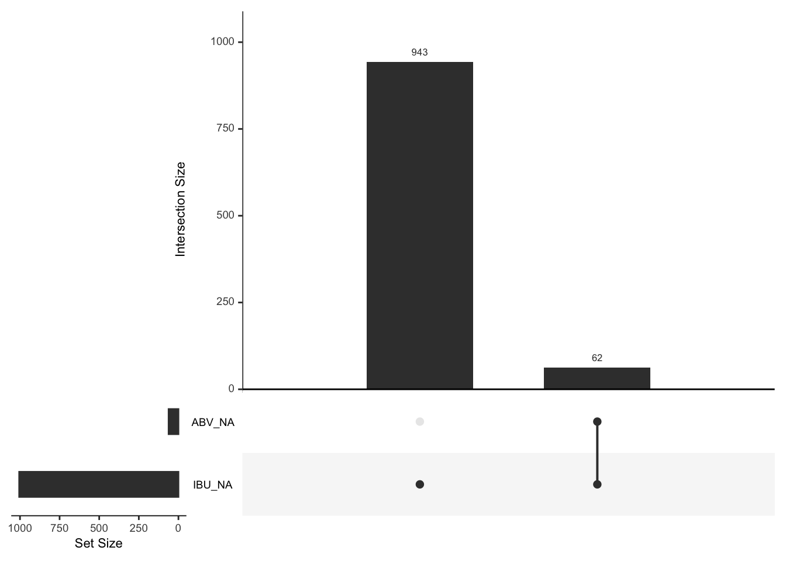
#this plot shows how many variables are missing from any column, and if any missing values overlap between columns
#the plot shows - 1005 missing IBU, 62 of those are also missing ABV.
#none are only missing ABV
#For missing IBU data:
#We'll visualize the missing data with a scatter plot and geom_miss_point
#This plot will sow us the ABV and IBU values present in blue, and the missing values in red underneath the axes. Missing IBU values are underneath the X-Axis, plotted by their ABV values, and missing ABV values are plotted behind the y-axis.
ggplot(beers, aes(x = ABV, y = IBU)) +
geom_point() +
labs(title = "Scatter Plot of ABV vs. IBU",
x = "ABV (Alcohol by Volume)",
y = "IBU (International Bitterness Units)") +
theme_minimal() + geom_miss_point()## Warning: Removed 1005 rows containing missing values (`geom_point()`).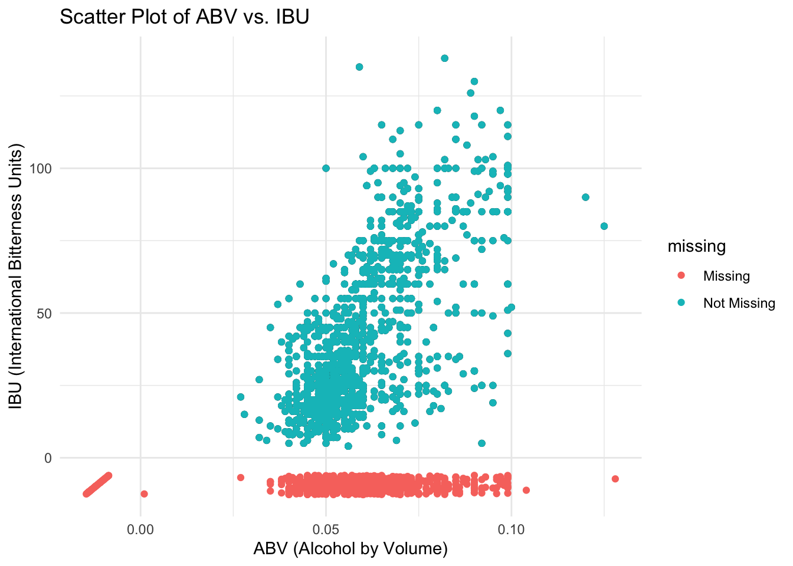
#Next, we must remove the missing ABV rows and Impute the median into the missing IBU values.
# Filter out rows with NA in ABV and remove the is_missing_ABV and is_missing IBU columns
merged_data_adjusted <- merged_data %>%
filter(!is.na(ABV)) %>%
select(-is_missing_ABV) %>%
select(-is_missing_IBU)
# Calculate the median IBU value (excluding missing values)
median_IBU <- median(merged_data_adjusted$IBU, na.rm = TRUE)
# condicting the median imputation
merged_data_adjusted <- merged_data_adjusted %>%
mutate(IBU = ifelse(is.na(IBU), median_IBU, IBU))
# Check the structure of the new dataframe
str(merged_data_adjusted)## 'data.frame': 2348 obs. of 10 variables:
## $ Brewery_id : int 1 1 1 1 1 1 2 2 2 2 ...
## $ Beer_name : chr "Get Together" "Maggie's Leap" "Wall's End" "Pumpion" ...
## $ Beer_ID : int 2692 2691 2690 2689 2688 2687 2686 2685 2684 2683 ...
## $ ABV : num 0.045 0.049 0.048 0.06 0.06 0.056 0.08 0.125 0.077 0.042 ...
## $ IBU : int 50 26 19 38 25 47 68 80 25 42 ...
## $ Style : chr "American IPA" "Milk / Sweet Stout" "English Brown Ale" "Pumpkin Ale" ...
## $ Ounces : num 16 16 16 16 16 16 16 16 16 16 ...
## $ Brewery_name: chr "NorthGate Brewing " "NorthGate Brewing " "NorthGate Brewing " "NorthGate Brewing " ...
## $ City : chr "Minneapolis" "Minneapolis" "Minneapolis" "Minneapolis" ...
## $ State : chr " MN" " MN" " MN" " MN" ...Summmarizing the data, we can see that there are missing values in the ABV and IBU columns. We must create plots/visualizations to aid us in determining why these values are missing, and how we can deal with them. For this analysis, we’ll first demonstrate a missingness heatmap, then a scatterplot with missing data, which will elucidate how we should deal with missing values.
In the first plot, we can see from the missingness heatmap that all missing ABV values are also missing IBU values. Because ABV and IBU have a largely linear relationship, as demonstrated later, We can’t know for sure why an ABV value is missing without having its IBU value. Therefore, we don’t have enough information about why any ABV is missing from this data set. We must categorize missing ABV as NMAR, adjust the scope of the study, and remove all values where ABV is missing.
The second plot, the scatter plot with missing values, demonstrates to us that IBU values are missing across the whole spectrum of ABV values. This tells us two things: 1. IBU values are not missing because of their corresponding ABV value. IBU was missing relatively evenly across the distribution of ABV values 2. IBU values were not missing because of their own value. This is because there is an approximate linear relationship between ABV and IBU, so if IBU values were missing more because they were large or small, then the missing values would be disproportionately represented by large or small ABVs.
Hence, the IBUs are not missing because of their own value or the value of another variable. They are missing completely at random, and we can impute their values as such.
Because the data has outliers, we will impute (replace) all the missing IBU values with the median IBU value for a complete robust analysis.
After determining how to deal with the missing values, we adjusted the data set and stored the new information in merged_data_adjusted. We will use this data frame going forward.
#IBU by state - creating a dataframe of states and their median IBUs
median_ibu_per_state <- merged_data_adjusted %>%
group_by(State) %>%
summarise(Median_IBU = median(IBU, na.rm = TRUE))
#plotting the median IBU values in a bar plot
ggplot(median_ibu_per_state, aes(x = reorder(State, -Median_IBU), y = Median_IBU)) +
geom_bar(stat = "identity", fill = "darkblue") +
geom_text(aes(label = Median_IBU), vjust = -0.5, size = 2, position = position_dodge(width = 0.9)) +
labs(title = "Median IBU by State",
x = "State",
y = "Median IBU") +
theme_minimal() +
theme(axis.text.x = element_text(hjust = 1, size = 5))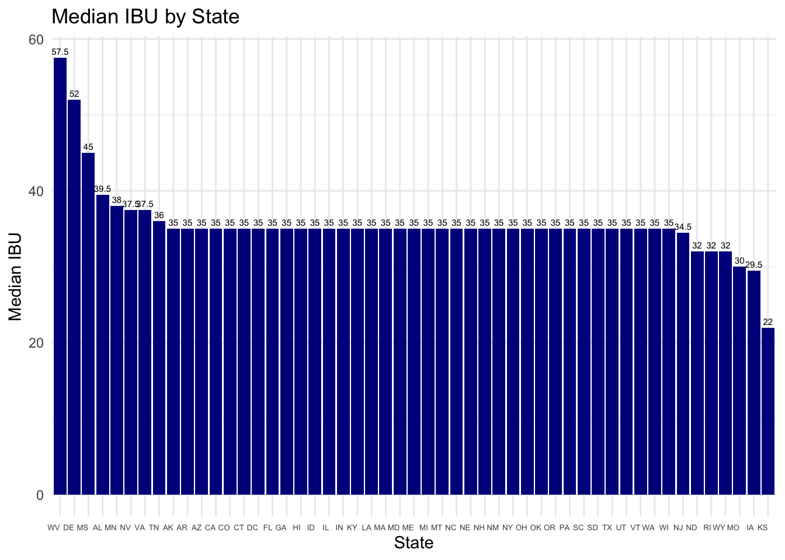
#ABV by state - creating a dataframe of states and their median ABVs
median_abv_per_state <- merged_data_adjusted %>%
group_by(State) %>%
summarise(Median_ABV = median(ABV, na.rm = TRUE))
#plotting the median ABV values in a bar plot
ggplot(median_abv_per_state, aes(x = reorder(State, -Median_ABV), y = Median_ABV)) +
geom_bar(stat = "identity", fill = "darkblue") +
geom_text(aes(label = Median_ABV*100), vjust = -0.5, size = 2, position = position_dodge(width = 0.9)) +
labs(title = "Median ABV (%) by State",
x = "State",
y = "Median ABV (%)") +
theme_minimal() +
theme(axis.text.x = element_text(hjust = 1, size = 5))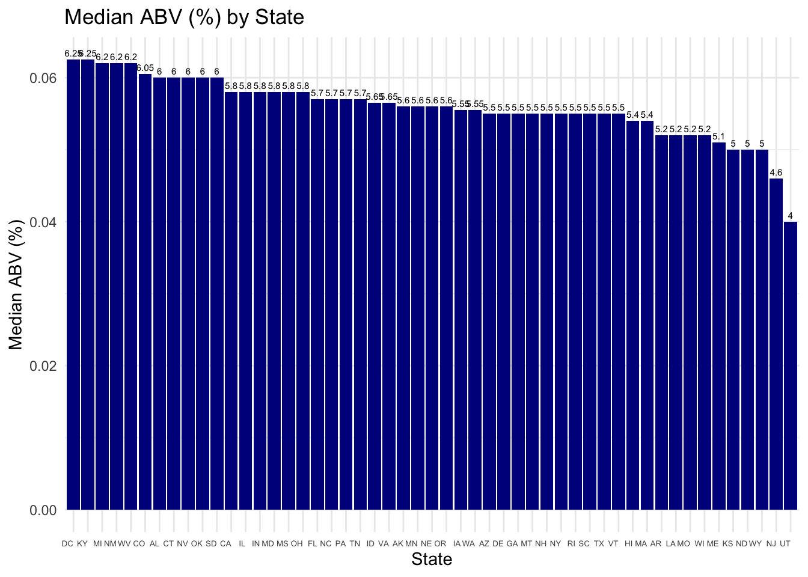
The bar plots above reveal interesting information.
The highest Median IBU (after adjusting the missing values) belonged to West Virginia, with a Median of approximately 58 IBUs. The lowest median IBU belonged to Kansas, with a median IBU of 22.
The highest Median ABV belonged to DC and Kentucky, with a median of approximately 6.2%. The lowest median ABV belonged to Utah, with 4.0%.
#state with the most alcoholic beer:
max_abv_beer <- merged_data_adjusted[which.max(merged_data_adjusted$ABV), ]
#state with the most bitter beer:
Max_IBU_beer <- merged_data_adjusted[which.max(merged_data_adjusted$IBU), ]
#printing the results:
cat("Highest ABV - State:", max_abv_beer$State, "\n")## Highest ABV - State: COcat("Highest ABV - Beer Name:", max_abv_beer$Beer_name, "\n")## Highest ABV - Beer Name: Lee Hill Series Vol. 5 - Belgian Style Quadrupel Alecat("Highest ABV - Brewery:", max_abv_beer$Brewery_name, "\n")## Highest ABV - Brewery: Upslope Brewing Companycat("Highest ABV - ABV value:", max_abv_beer$ABV, "\n\n")## Highest ABV - ABV value: 0.128cat("Highest IBU - State:", Max_IBU_beer$State, "\n")## Highest IBU - State: ORcat("Highest IBU - Beer Name:", Max_IBU_beer$Beer_name, "\n")## Highest IBU - Beer Name: Bitter Bitch Imperial IPAcat("Highest IBU - Brewery:", Max_IBU_beer$Brewery_name, "\n")## Highest IBU - Brewery: Astoria Brewing Companycat("Highest IBU - IBU value:", Max_IBU_beer$IBU, "\n")## Highest IBU - IBU value: 138From this data, we can gather:
Colorado has the beer with the highest ABV. Quadrupel Ale from Upslope Brewing Company in Boulder, CO has an ABV of 12.8%. Oregon has the beer with the highest IBU rating. Bitter Bitch Imperial IPA (fitting name) from Astoria Brewing Company from Astoria, OR has an IBU of 138.
# calculating and printing the ABV statistics
cat("Minimum ABV:", min(merged_data_adjusted$ABV), "\n")## Minimum ABV: 0.001cat("Maximum ABV:", max(merged_data_adjusted$ABV), "\n")## Maximum ABV: 0.128cat("Median ABV:", median(merged_data_adjusted$ABV), "\n")## Median ABV: 0.056cat("Mean ABV:", mean(merged_data_adjusted$ABV), "\n")## Mean ABV: 0.05977342#creating a histogram of ABV to see the distribution:
ggplot(merged_data_adjusted, aes(x = ABV)) +
geom_histogram(binwidth = 0.005, fill = "blue", color = "black") +
labs(title = "ABV Histogram",
x = "ABV (Alcohol by Volume)",
y = "Frequency") +
theme_minimal()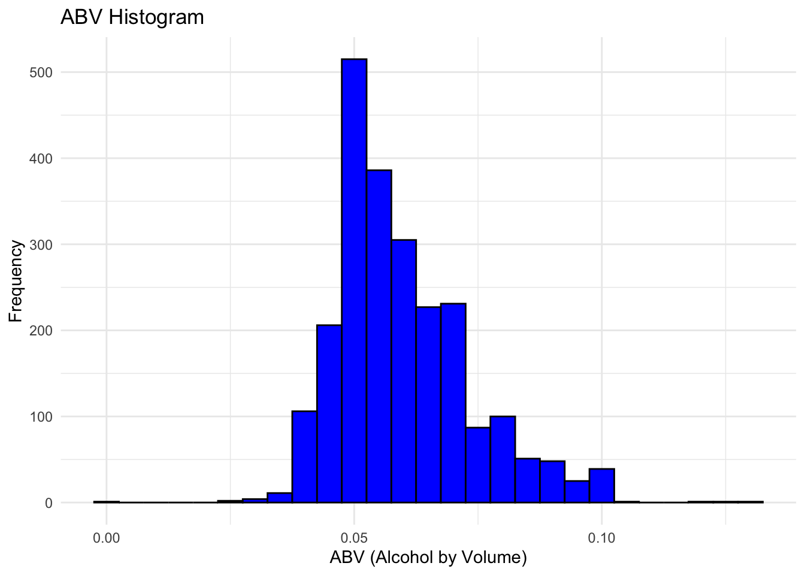
The mean beer in the data set has an alcohol content of 5.98%, and the median has an alcohol content of 5.6%. Considering that the mean is slightly larger than the median, as well as the histogram, we can see that there is a slight right skew to the data, Meaning that more beers fall towards the lower end of the ABV scale than the higher end.
Is there an apparent relationship between the bitterness of the beer and its alcoholic content? Draw a scatter plot. Make your best judgment of a relationship and EXPLAIN your answer.
#to demonstrate if a relationship exists - we'll make a scatterplot
ggplot(merged_data_adjusted, aes(x = ABV, y = IBU)) + geom_point() +
labs(title = "Scatter Plot of ABV vs. IBU",
x = "ABV (Alcohol by Volume)",
y = "IBU (International Bitterness Units)") +
theme_minimal()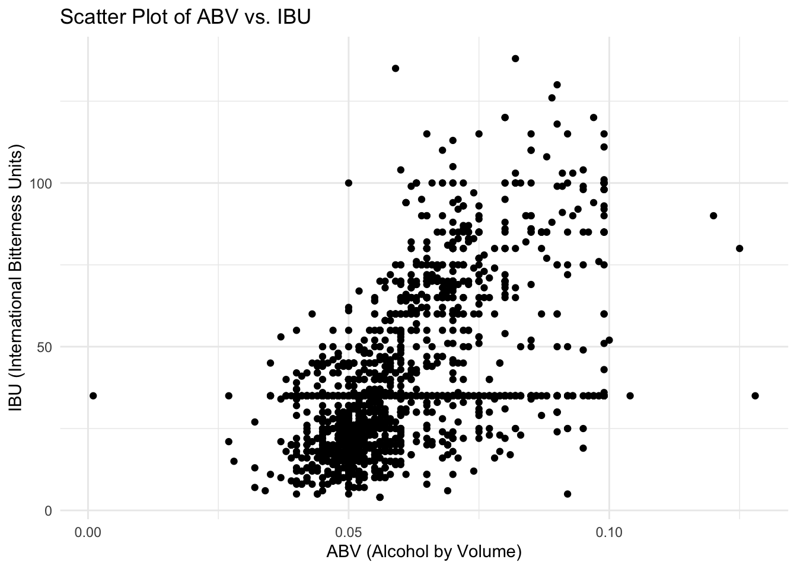
#there is visual evidence of a linear relationship
#note the largely horizontal line of points at 35, this is from our imputed dataBased on the plotting of Alcohol By Volume (ABV) and International Bitterness Units (IBU) it appears that there is a linear relationship between the two. Generally, as ABV increases, we can expect IBU to also increase, and vice versa.
Perhaps, based on ingredients and fermentation time, the alcohol content increases, but more bitter flavors are produced as well. There could be a number of causes of this apparent relationship.
Budweiser would also like to investigate the difference with respect to IBU and ABV between IPAs (India Pale Ales) and other types of Ale (any beer with “Ale” in its name other than IPA). You decide to use KNN classification to investigate this relationship. Provide statistical evidence one way or the other. You can of course assume your audience is comfortable with percentages … KNN is very easy to understand conceptually. In addition, while you have decided to use KNN to investigate this relationship (KNN is required) you may also feel free to supplement your response to this question with any other methods or techniques you have learned. Creativity and alternative solutions are always encouraged (Supplement is done in chatGPT)
#first, we will filter so that the data only includes IPAs and other Ales. This filtered dataset, filtered_data, will be used for this analysis.
filtered_data <- merged_data_adjusted %>% filter(grepl("Ale|IPA",Style))
# Create the 'category' column - 0 is IPA and 1 is other ale This column will be the focus of the knn modeling.
filtered_data$category <- ifelse(grepl("IPA", filtered_data$Style), 0, 1)
#plotting the new filtered dataset of ABV vs IBU for ales
plot <- ggplot(filtered_data, aes(x = ABV, y = IBU, color = as.factor(category))) +
geom_point() +
labs(title = "ABV vs IBU for IPA and Other Ales",
x = "ABV (Alcohol by Volume)",
y = "IBU (International Bitterness Units)") +
scale_color_manual(values = c("0" = "blue", "1" = "red"),
labels = c("0" = "IPA", "1" = "Other Ale")) +
theme_minimal() + labs(color = "Category")
plot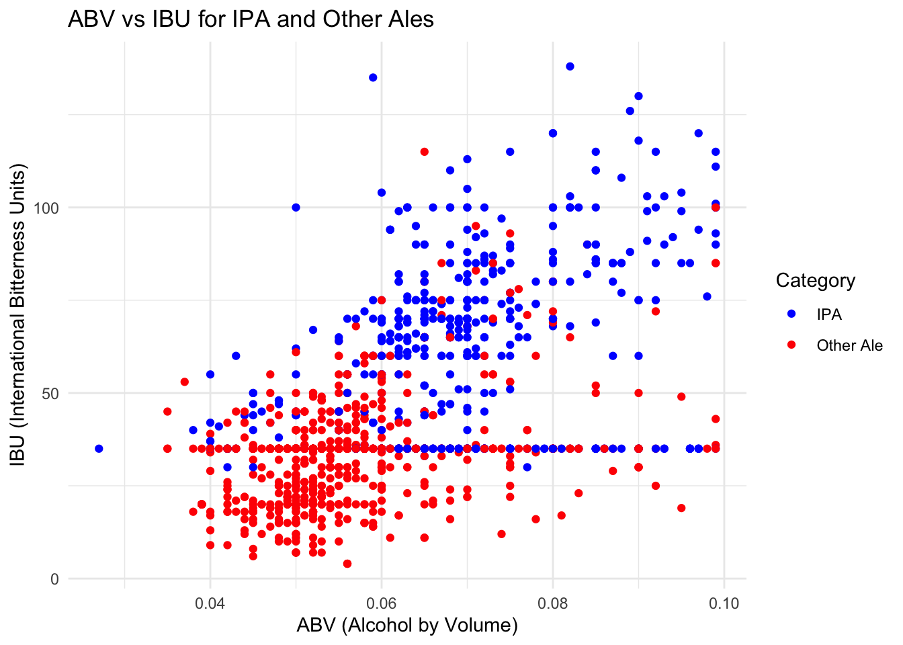
library(class) #this library is used for knn evaluation
library(e1071)
library(caret) # for model evaluation## Loading required package: lattice##
## Attaching package: 'caret'## The following object is masked from 'package:purrr':
##
## liftlibrary(tidyverse)
set.seed(4) #setting an initial seed before running through multiple seeds - for reproducibility
splitPerc = .70 #70/30 train/test split
#initializing the variables we would like to analyze
knn_accuracies <- numeric(100)
knn_sensitivities <- numeric(100)
knn_specificities <- numeric(100)
# Loop through 1000 different seeds - finding an average accuracy
for (i in 1:1000) {
# Set a new seed for each iteration
seed <- sample.int(10000, 1)
set.seed(seed)
#BELOW I just copied & pasted the code to get the train & test for the knn
trainIndices = sample(1:dim(filtered_data)[1],round(splitPerc * dim(filtered_data)[1]))
train = filtered_data[trainIndices,]
test = filtered_data[-trainIndices,]
#knn model, k = 3, confusion matrix 2
classifications = knn(train[,c(4,5)],test[,c(4,5)], train$category, prob = TRUE, k = 3)
table(classifications,test$category)
confusion_matrix2 <- confusionMatrix(table(classifications,test$category))
# Evaluating KNN model
knn_accuracies[i] <- accuracy <- confusion_matrix2$overall["Accuracy"]
knn_sensitivities[i] <- sensitivity <- confusion_matrix2$byClass["Sensitivity"]
knn_specificities[i] <- specificity <- confusion_matrix2$byClass["Specificity"]
}
avg_knn_accuracy <- mean(knn_accuracies) #accuracy of the model
avg_knn_sensitivity <- mean(knn_sensitivities) #likelihood of getting 'IPA' correct
avg_knn_specificity <- mean(knn_specificities) #likelihood of getting 'Other Ale' correct
#printing out the information in a digestible way
cat("\nK-Nearest Neighbors (KNN) Model Average Evaluation:\n")##
## K-Nearest Neighbors (KNN) Model Average Evaluation:cat(paste("Average Accuracy:", avg_knn_accuracy, "\n"))## Average Accuracy: 0.814066964285714cat(paste("Average Sensitivity:", avg_knn_sensitivity, "\n"))## Average Sensitivity: 0.729762930090677cat(paste("Average Specificity:", avg_knn_specificity, "\n"))## Average Specificity: 0.865048364484173# Create a histogram for KNN accuracies
hist(knn_accuracies, main = "KNN Accuracies Histogram", xlab = "Accuracy", col = "blue")
# Add a vertical line at the average KNN accuracy
abline(v = avg_knn_accuracy, col = "red", lwd = 2)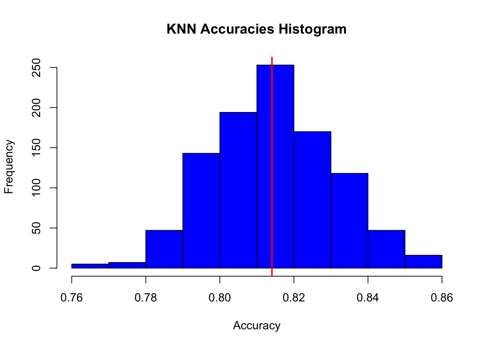
After filtering the data to only include IPAs and other Ales, we aksed the question: could we determine if an ale is an IPA based on its ABV and IBU?
We trained a machine learning model to attempt to do just that.
As visually demonstrated, the IPAs mostly had higher ABV and IBU values, while other ales largely lived in the lower ABV and IBU values. So, we trained a k-nearest neighbor model, with k = 3, to predict if an ale was an IPA or not.
Using 1000 different randomness seeds, we ran the model 1000 times, and captured the average accuracy statistics. The model’s mean accuracy, as demonstrated by the printed values and the histogram, was 81.4%. The mean sensitivity, which represents the rate at which it correctly guessed that a beer was an IPA, was 72.97%. And the mean specificity, which represents the rate at which it correctly guessed that a beer was an ‘other ale’, was 86.5%
These insights could be used to influence marketing decisions, even when the model was not accurate in classifying a beer. If the model, which is usually correct, thought an ale was an IPA when it wasn’t, this is an interesting insight that could affect how we sell it. For example, such an ale could be marketed with the following tagline:
“Hey IPA lovers, try this new ale instead, with just the right amount of bitterness!”
#no 9
cor.test(merged_data$ABV, merged_data$IBU, method="pearson")##
## Pearson's product-moment correlation
##
## data: merged_data$ABV and merged_data$IBU
## t = 33.863, df = 1403, p-value < 2.2e-16
## alternative hypothesis: true correlation is not equal to 0
## 95 percent confidence interval:
## 0.6407982 0.6984238
## sample estimates:
## cor
## 0.6706215merged_data %>%
ggplot(aes(x=ABV, y=IBU)) +
geom_bin2d(bins=30) +
theme_minimal() +
labs(title="Density Plot of ABV vs. IBU", x="ABV (%)", y="IBU") +
scale_fill_viridis_c()## Warning: Removed 1005 rows containing non-finite values (`stat_bin2d()`).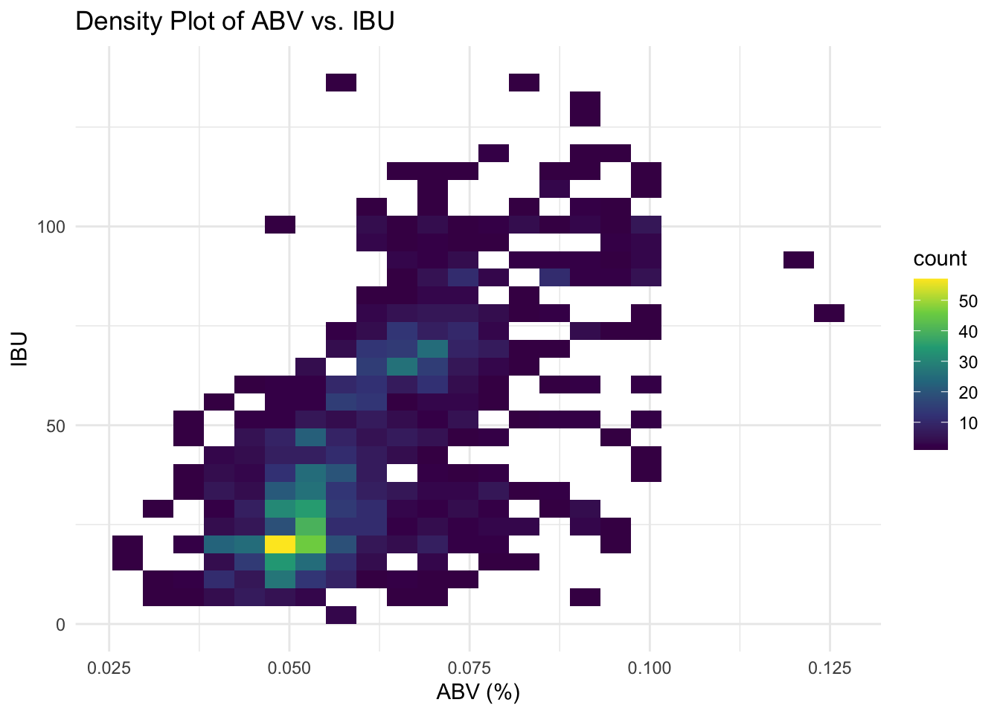
mean_ABV <- mean(merged_data$ABV, na.rm=TRUE)
mean_IBU <- mean(merged_data$IBU, na.rm=TRUE)
mean_ABV## [1] 0.05977342mean_IBU## [1] 42.71317In order to go above and beyond and find new insights, we decided to do two things. First, we wanted to determine the strength of the correlation between ABV and IBU, which we previously hypothesized to be linearly related. After analyzing the linear relationship between the two with cor.test, we determined that the two have a correlation coefficient between the two of them of 0.6706. This suggests rather strongly that there is some positive linear relationship between the two. If the coefficient were 0, there would be no relationship between ABV and IBU.
Additionally, with a p-value of 2.2e-16, the likelihood of there being no relationship between the two is incredibly small. We can conclude with extreme confidence that this linear relationship exists.
Next, we created a heatmap of ABV and IBU to determine what ‘neighborhoods’ of alcohol content and bitterness are popular, to provide insights on what corners of the market Budweiser could enter. We found two areas that are immensely popular. First, there is a high concentration of beers with an ABV of around 5% and an IBU under 25. Next, there is another high concentration of beers with an ABV slightly less than 7.5% and and IBU slightly under 75. We believe Budweiser should make a push towards focusing on smaller subsidiaries that can outproduce and outperform other craft beers at the popular intersections of IBU and ABV
merged_data_adjusted2 <- merged_data
# Filter out rows with NA in ABV
merged_data_adjusted2 <- merged_data_adjusted2 %>%
filter(!is.na(ABV))
#below is code provided by ChatGPT - greating a linear model and imputing the IBU values onto the line of best fit
# Fit a linear regression model (ABV as predictor and IBU as the response)
lm_model <- lm(IBU ~ ABV, data = merged_data_adjusted2)
# Predict missing IBU values based on the linear regression model
missing_IBU_data <- merged_data_adjusted2[is.na(merged_data_adjusted2$IBU), ]
missing_IBU_data$Predicted_IBU <- predict(lm_model, newdata = missing_IBU_data)
# Impute missing IBU values with the predicted values
merged_data_imputed <- merge(merged_data_adjusted2, missing_IBU_data, all.x = TRUE)
merged_data_imputed$IBU <- ifelse(is.na(merged_data_imputed$IBU), merged_data_imputed$Predicted_IBU, merged_data_imputed$IBU)
#Above is the end of the code provided by chatGPT - variable names were tweaked as necessary but otherwise the code worked perfectly
#recreating the filtered dataset for the knn model
filtered_data2 <- merged_data_imputed %>% filter(grepl("Ale|IPA",Style))
# Create the 'category' column - 0 is IPA and 1 is other ale
filtered_data2$category <- ifelse(grepl("IPA", filtered_data2$Style), 0, 1)
#plotting the new filtered dataset of ABV vs IBU for ales
plot <- ggplot(filtered_data2, aes(x = ABV, y = IBU, color = as.factor(category))) +
geom_point() +
labs(title = "ABV vs IBU for IPA and Other Ales",
x = "ABV (Alcohol by Volume)",
y = "IBU (International Bitterness Units)") +
scale_color_manual(values = c("0" = "blue", "1" = "red"),
labels = c("0" = "IPA", "1" = "Other Ale")) +
theme_minimal() + labs(color = "Category")
plot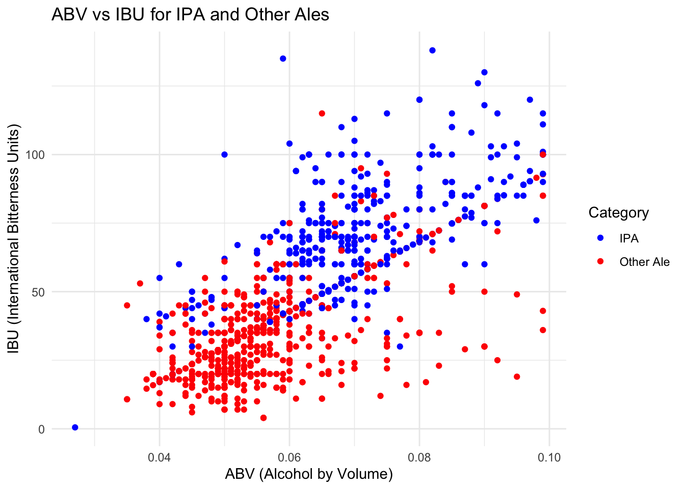
set.seed(4)
splitPerc = .70
knn_accuracies <- numeric(100)
knn_sensitivities <- numeric(100)
knn_specificities <- numeric(100)
# Loop through 1000 different seeds
for (i in 1:1000) {
# Set a new seed for each iteration
seed <- sample.int(10000, 1)
set.seed(seed)
#BELOW I just copied & pasted the code to get the train & test for the knn
trainIndices = sample(1:dim(filtered_data2)[1],round(splitPerc * dim(filtered_data2)[1]))
train = filtered_data2[trainIndices,]
test = filtered_data2[-trainIndices,]
#knn model, k = 3, confusion matrix 2
classifications = knn(train[,c(4,5)],test[,c(4,5)], train$category, prob = TRUE, k = 3)
table(classifications,test$category)
confusion_matrix2 <- confusionMatrix(table(classifications,test$category))
# Evaluating KNN model
knn_accuracies[i] <- accuracy <- confusion_matrix2$overall["Accuracy"]
knn_sensitivities[i] <- sensitivity <- confusion_matrix2$byClass["Sensitivity"]
knn_specificities[i] <- specificity <- confusion_matrix2$byClass["Specificity"]
}
avg_knn_accuracy <- mean(knn_accuracies)
avg_knn_sensitivity <- mean(knn_sensitivities)
avg_knn_specificity <- mean(knn_specificities)
cat("\nK-Nearest Neighbors (KNN) Model Average Evaluation:\n")##
## K-Nearest Neighbors (KNN) Model Average Evaluation:cat(paste("Average Accuracy:", avg_knn_accuracy, "\n"))## Average Accuracy: 0.811982142857143cat(paste("Average Sensitivity:", avg_knn_sensitivity, "\n"))## Average Sensitivity: 0.73242272243728cat(paste("Average Specificity:", avg_knn_specificity, "\n"))## Average Specificity: 0.859684484778119# Create a histogram for KNN accuracies
hist(knn_accuracies, main = "KNN Accuracies Histogram - Regression", xlab = "Accuracy", col = "blue")
# Add a vertical line at the average KNN accuracy
abline(v = avg_knn_accuracy, col = "red", lwd = 2)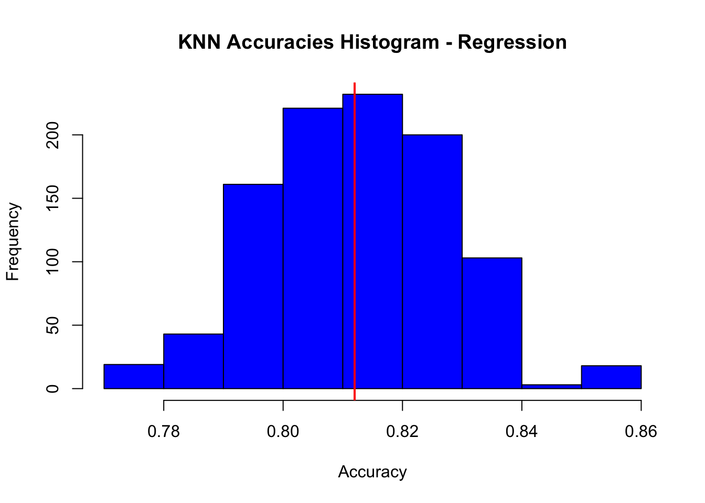
Utilizing AI (specifically ChatGPT), as well as supplemental statistics knowledge, we thought of another way we could deal with missing IBU values, as well as perform the machine learning model again using this additional method. Since we knew about the linear relationship between ABV and IBU, we decided to create a best-fit line and impute the missing IBU values onto that line. By creating a best-fit line, which approximates the linear relationship between IBU and ABV, we can extrapolate an estimate for a missing IBU value based on the ABV. The scatterplot above demonstrates this new way to impute the data. instead of a horizontal line of points on IBU = 35 like we had seen before, we now see a diagonal line of points right along the best fit line. The missing IBU values were placed on that line based on ABV.
We decided to re-do the machine learning model based on this new scatterplot in the hopes that it would be more accurate. However, curiously, the model became slightly less accurate in classiflying IPAs and other ales. However, the insights and visualizations provided by the second model were too interesting not to include. They also speak to the power of ChatGPT and other generative AIs. These are useful tools that greatly reduced the mount of time we needed to answer our questions, we discovered, but only if we knew the right questions to ask.
In conclusion, our analysis of this data has been able to provide insights, create new areas of interest to look into further, and provided direction for new ways Budweiser can compete in the beer marketplace and gain an edge. We greatly appreciate the opportunity to work on this incredible project, and we hope our insights are able to make an impact! Thank you so much!